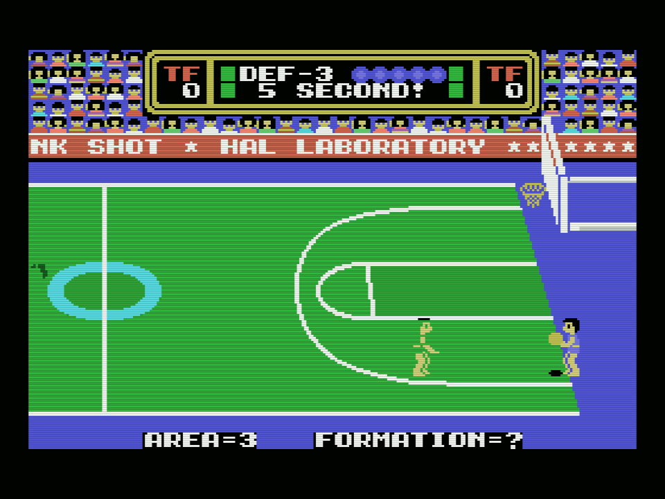
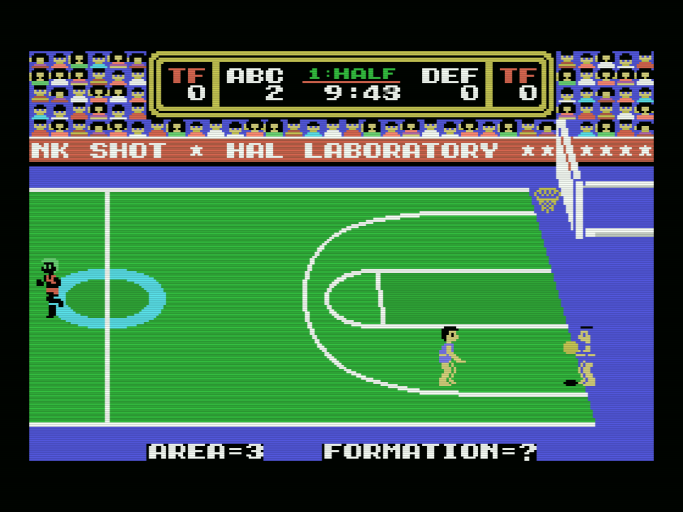
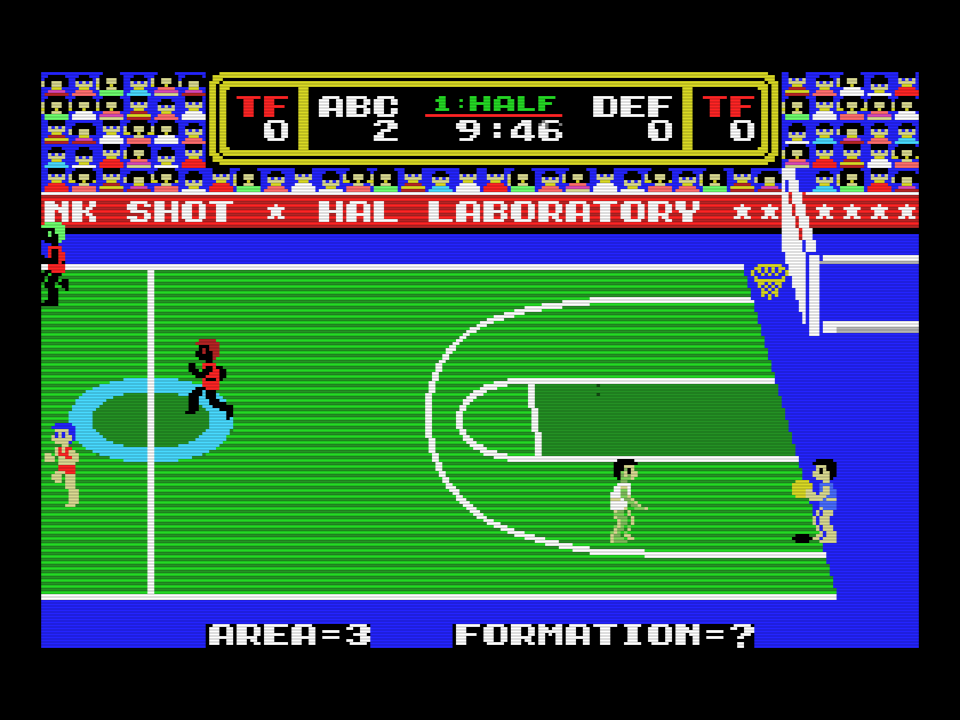

Todo lo de esta web está medido en openMSX: el cartucho original en un MSX1, el parcheado en un MSX1 y el parcheado en un MSX2 de verdad, el Philips NMS
tools/omsx_parpadeo.tcl lee, cada cuadro, la tabla de atributos que el VDP está enseñando (el registro 5, y el 0 para saber qué modo de sprites hay) y cuenta, línea a línea, cuántos sprites caen en cada una. Los que pasan del límite del VDP, cuatro en el TMS9918 y ocho en el V9938 en el modo de sprites 2, son los que no se pintan. Los suma por cuadro y, al final, vuelca la VRAM, los registros del VDP y una captura. tools/lanza_parpadeo.sh la lanza:
sh tools/lanza_parpadeo.sh <dir> <máquina> <rom> <límite> <desde> <hasta> "<teclas>"Las teclas van como segundo fila máscara de la matriz del teclado: el espacio es la fila 8 con 0x01, abajo la fila 8 con 0x40. Tres espacios llevan del título al menú, a SET-UP y al partido, con la máquina llevando los dos equipos. El MSX2 arranca más tarde, de ahí las teclas más tarde. Con DS_THROTTLE=on corre a velocidad real, para verlo.
Treinta segundos de partido. No hay dos partidos iguales, así que cada pasada es un partido distinto.
| cartucho | máquina | cuadros | sprites sin pintar, por cuadro | peor cuadro |
|---|---|---|---|---|
| original | C-BIOS_MSX1_JP (MSX1, 60 Hz) | 1.798 | 66,7 | 166 |
| parcheado | C-BIOS_MSX1_JP (MSX1, 60 Hz) | 1.798 | 69,5 | 175 |
| parcheado | Philips_NMS_8250 (MSX2, 50 Hz) | 1.505 | 1,7 | 22 |
sh tools/lanza_parpadeo.sh work/p_msx1_antes C-BIOS_MSX1_JP dunkshot.rom 4 16 46 "4 8 0x01 7 8 0x01 10 8 0x01"
sh tools/lanza_parpadeo.sh work/p_msx1_d4 C-BIOS_MSX1_JP work/dunkshot_msx2.rom 4 16 46 "4 8 0x01 7 8 0x01 10 8 0x01"
sh tools/lanza_parpadeo.sh work/p_msx2_d4 Philips_NMS_8250 work/dunkshot_msx2.rom 8 20 50 "8 8 0x01 11 8 0x01 14 8 0x01"En el MSX1 el cartucho parcheado se comporta como el original: el registro 5 alterna 0x7C y 0x7E, 899 cuadros cada uno, y la cifra es la de otro partido, no la de un juego peor. En el MSX2, el registro 0 vale 0x04 y el 5 vale 0x7F en los 1.505 cuadros.
Cada una es el último cuadro de una de las pasadas de arriba, tal como lo pinta openMSX.



La pantalla TRADE, con la figura de muestra, se sacó a velocidad real y con la ventana a la vista:
DS_THROTTLE=on sh tools/lanza_parpadeo.sh work/p_msx2_trade_v Philips_NMS_8250 work/dunkshot_msx2.rom 8 20 21 "8 8 0x01 11 8 0x40 12 8 0x40 13 8 0x40 14 8 0x01"